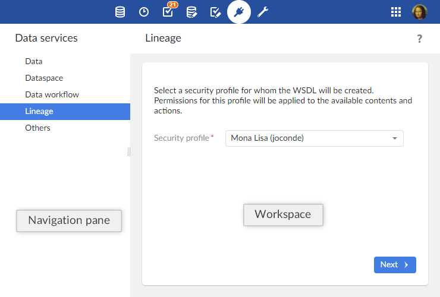

Introduction to data services
Overview
What is a data service?
A data service is:
a standard Web service that interacts with TIBCO EBX®.
SOAP data services can be dynamically generated based on data models from the 'Data Services' area.
a REST service that allows interrogating the EBX® repository.
The built-in RESTful service does not require a service interface, it is self-descriptive through the returned metadata.
They can be used to access some of the features available through the user interface.
Lineage
Lineage is used to establish user permission profiles for non-human users, namely data services. When accessing data using WSDL interfaces, data services use the permission profiles established through lineage.
Glossary
See also
Using the Data Services area user interface

Note
This area is available only to authorized users in the 'Advanced perspective'.
Related concepts
 User guide table of contents
User guide table of contents